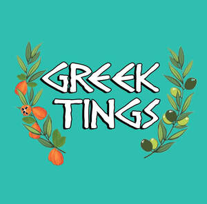

Trade Mark Journal No.2025/043 24 October 2025
UK00004270668 29 September 2025 (43)

- Class 43
- Food and drink catering; Catering of food and drink; Preparation of food and beverages; Take-away food and drink services; Providing food and drink; Food and drink catering for banquets; Serving food and drink for guests; Food and drink catering for institutions; Serving food and drink for guests in restaurants; Corporate hospitality (provision of food and drink); Food and drink catering for cocktail parties; Serving food and drink in restaurants and bars; Mobile catering services; Business catering services; Catering services for company cafeterias; Catering services for hospitality suites; Catering services for providing European-style cuisine; Catering services for educational establishments; Outside catering services; Providing food and drink catering services for exhibition facilities; Providing food and drink catering services for convention facilities; Outside catering; Mobile catering; Catering services; Organisation of catering for birthday parties; Restaurant services; Hospitality services [food and drink]; Banqueting services; Snack-bar services; Cocktail lounge buffets; Take-away food services; Food preparation; Catering services for conference centers; Catering of food and drinks; Arranging of wedding receptions [food and drink]; Arranging of banquets; Providing food and drink for guests in restaurants; Providing food and drink catering services for fair and exhibition facilities; Services for providing food and drink; Services for the preparation of food and drink; Food and drink preparation services; Providing food and beverages; Consulting services in the field of culinary arts; Restaurant services for the provision of fast food; Provision of food and drink in restaurants; Catering services for nursing homes; Food preparation services; Services for providing food; Services for the provision of food and drink; Wine tasting services (provision of beverages); Catering; Providing food and drink in bistros.
Greek Tings Ltd
Greek Tings Ltd